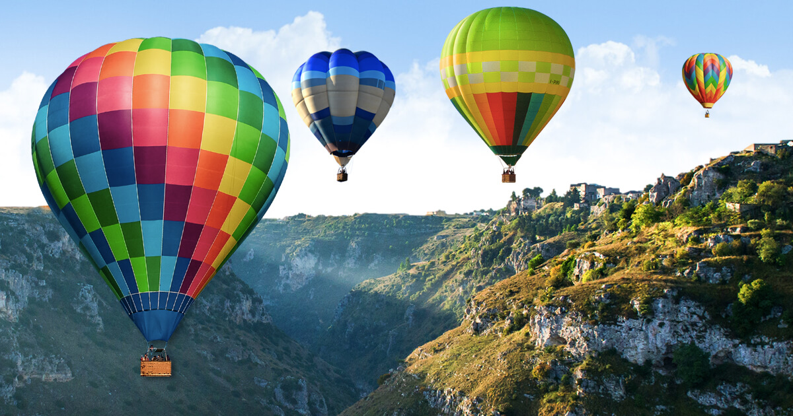

La mongolfiera è il tipo più comune di pallone aerostatico, che, attraverso una miscela di aria calda e gas prodotti dalla combustione, si solleva da terra offrendo un bel viaggio tra le nuvole! 
| offerta | h di viaggio | costi (euro) |
| Cappadocia: volo in mongolfiera | 2 | 149 |
| Giro in mongolfiera in Cappadocia e colazione con champagne | 3.50 | 160 |
| Cappadocia: volo in mongolfiera all'alba | 1 | 200 |
| 1 ora di volo in mongolfiera sui Camini delle Fate in Cappadocia | 1 | 226 |
| Cappadocia: volo in mongolfiera Royal King Flight | 3 | 210 |